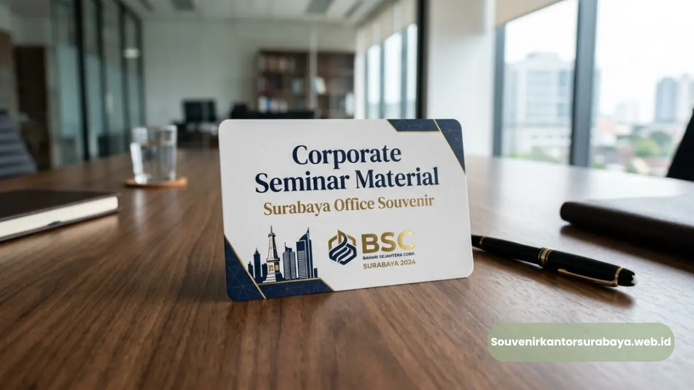
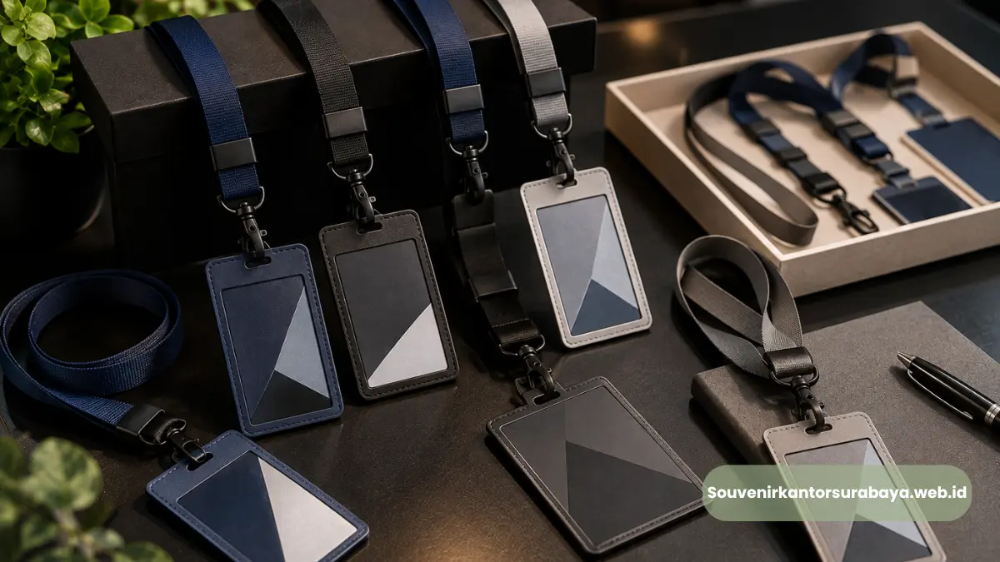

Flashdisk kartu souvenir seminar kantor Surabaya sebagai media promosi yang efektif.
- Kenapa Flashdisk Kartu Cocok untuk Souvenir Seminar?
- Apakah Flashdisk Kartu Bisa Menyimpan Video dan Dokumen Sekaligus?
- Apa Saja yang Termasuk dalam Flashdisk Kartu untuk Kebutuhan Seminar?
- Bagaimana Cara Menentukan Jumlah Pesanan yang Tepat untuk Peserta Seminar?
- Manfaat Jangka Panjang Souvenir Fungsional pada Seminar Korporat
- Apakah Souvenir Fungsional Lebih Efektif Dibanding Souvenir Dekoratif?
- Kesimpulan
Flashdisk kartu souvenir seminar kantor Surabaya adalah flashdisk berbentuk kartu kapasitas besar yang dirancang khusus untuk membagikan materi seminar sekaligus berfungsi sebagai souvenir korporat.
Bagi panitia seminar dan event organizer korporat di Surabaya, memilih souvenir yang tepat untuk peserta bukan sekadar soal tampilan, tetapi juga soal fungsi.
Flashdisk kartu hadir sebagai jawaban atas kebutuhan tersebut karena mampu menyimpan materi presentasi dalam kapasitas besar sekaligus tampil elegan sebagai merchandise acara.
Setiap peserta seminar tidak hanya membawa pulang souvenir, tetapi juga akses langsung ke seluruh materi yang telah dibagikan selama acara berlangsung.
Kebutuhan souvenir fungsional pada acara souvenir seminar kantor terus meningkat setiap tahunnya, sejalan dengan makin seringnya perusahaan di Surabaya menyelenggarakan workshop dan pelatihan internal maupun eksternal.
Baca Juga
Kenapa Flashdisk Kartu Cocok untuk Souvenir Seminar?
Flashdisk kartu cocok karena mampu menyimpan seluruh materi presentasi seminar dalam satu perangkat ringkas yang langsung dapat dibawa pulang oleh peserta tanpa memerlukan unduhan tambahan.
Pada banyak acara seminar, panitia sering menghadapi kendala distribusi materi karena keterbatasan koneksi internet di lokasi acara atau banyaknya peserta yang ingin mengakses file secara bersamaan.
Dengan flashdisk kartu, seluruh materi dapat disalin sebelumnya ke dalam perangkat, sehingga peserta bisa langsung membuka materi begitu tiba di rumah atau kantor tanpa hambatan teknis.
Apakah Flashdisk Kartu Bisa Menyimpan Video dan Dokumen Sekaligus?
Bisa, flashdisk kartu kapasitas besar mampu menyimpan kombinasi dokumen presentasi, video rekaman sesi, dan foto dokumentasi acara dalam satu perangkat yang sama.
Banyak seminar korporat kini menyertakan rekaman video sesi pembicara sebagai nilai tambah bagi peserta. Kapasitas besar pada flashdisk kartu, mulai dari 32GB, memungkinkan panitia menggabungkan dokumen, video, dan foto dokumentasi tanpa khawatir kehabisan ruang penyimpanan.
Apa Saja yang Termasuk dalam Flashdisk Kartu untuk Kebutuhan Seminar?
Paket umumnya mencakup unit flashdisk kartu dengan pilihan kapasitas, proses cetak custom logo perusahaan atau logo acara, serta kemasan yang siap dibagikan langsung kepada peserta seminar.
Flashdisk kartu untuk souvenir seminar biasanya disesuaikan dengan jumlah peserta acara, mulai dari puluhan hingga ratusan unit sekaligus.
Setiap unit dapat dicetak dengan logo perusahaan penyelenggara, logo acara, maupun kombinasi keduanya agar identitas seminar tetap terjaga di setiap perangkat yang dibagikan.

Materi presentasi dan dokumentasi seminar dapat langsung disalin ke dalam flashdisk kartu custom.
Bagaimana Cara Menentukan Jumlah Pesanan yang Tepat untuk Peserta Seminar?
Jumlah pesanan sebaiknya disesuaikan dengan estimasi peserta ditambah cadangan sekitar sepuluh persen untuk mengantisipasi peserta tambahan atau kebutuhan mendadak saat acara berlangsung.
Menghitung kebutuhan souvenir secara akurat membantu panitia menghindari kekurangan maupun kelebihan stok yang tidak terpakai.
Menyediakan cadangan unit tambahan juga membantu mengantisipasi peserta yang mendaftar secara dadakan pada hari pelaksanaan seminar.
Manfaat Jangka Panjang Souvenir Fungsional pada Seminar Korporat
Souvenir fungsional seperti flashdisk kartu memberikan dampak jangka panjang karena tetap digunakan peserta setelah acara selesai, sehingga logo perusahaan terus terlihat dalam aktivitas kerja sehari-hari mereka.
Berbeda dengan souvenir yang hanya dipajang atau disimpan tanpa digunakan, flashdisk kartu memiliki fungsi nyata dalam pekerjaan sehari-hari peserta.
Setiap kali digunakan untuk menyimpan atau memindahkan data, logo perusahaan pada permukaan kartu akan terus terlihat, menciptakan efek branding yang berkelanjutan jauh setelah acara seminar selesai.
Apakah Souvenir Fungsional Lebih Efektif Dibanding Souvenir Dekoratif?
Souvenir fungsional cenderung lebih efektif karena memiliki tingkat penggunaan ulang yang lebih tinggi dibanding souvenir dekoratif yang hanya digunakan sekali atau dipajang tanpa fungsi tambahan.
Souvenir dekoratif seperti pajangan meja atau gantungan kunci sering kali hanya menarik perhatian pada saat diterima, namun jarang digunakan kembali secara rutin.
Sebaliknya, perangkat seperti flashdisk kartu terus dipakai dalam aktivitas kerja, sehingga nilai eksposur brand yang diperoleh perusahaan menjadi jauh lebih tinggi dalam jangka panjang.

Hawa Nadira
Tim penulis CorporateGifts ID berfokus pada strategi souvenir kantor, merchandise korporat, dan inovasi brand untuk klien B2B.
Keahlian: Branding perusahaan, produksi souvenir, paket event, desain materi promosi.
Artikel Terkait

Flashdisk Kartu Kapasitas Besar
Pilihan flashdisk kartu kapasitas besar di Surabaya dengan custom logo perusahaan untuk souvenir kantor premium.
Baca Selengkapnya
Paket Seminar Kit Lengkap Surabaya
Paket seminar kit lengkap untuk kebutuhan acara korporat dengan isi custom terlengkap dan pengiriman cepat.
Baca Selengkapnya
Lanyard Custom Seminar Kantor
Layanan lanyard custom dengan bahan berkualitas tinggi dan cetak presisi untuk identitas acara perusahaan.
Baca Selengkapnya